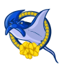

NSFL DailyQB Wolfie McDummy (COL) wins League MVP!NEW YORK -- The Colorado Yeti' QB was a landslide winner Friday in balloting by a nationwide panel of 50 sports writers and broadcasters who cover the league. McDummy won the MVP award by amassing season totals of 277/467, 3489 yds, 23 TD.
"I'm honored to receive this award because of the number of other worthy candidates who had some great years," McDummy said. "It was just fun for me, truly, to watch them. I'm just glad to be a part of it."QB Wolfie McDummy (COL) wins Playoff MVP!NEW YORK -- The Colorado Yeti' QB took home the 2037 Playoff MVP award today. McDummy won the award by amassing playoff totals of 69/111, 740 yds, 4 TD.LB Mo Berry (COL) wins Defensive Player of the Year!NEW YORK -- In his own view, Mo Berry put together his best professional season in 2037. How appropriate, then, that he is The Associated Press 2037 Defensive Player of the Year.
The versatile Berry had 101 tackles, 14 sacks, 0 interceptions, and 1 forced fumbles with 0 defensive touchdowns, and was a key to the Yeti' turnaround on defense. His role on the defense earned Berry a majority of votes Tuesday from a nationwide panel of 50 sports writers and broadcasters who cover the league.QB Wolfie McDummy (COL) wins Offensive Player of the Year!Colorado Yeti quarterback Wolfie McDummy is Sporting News' Offensive Player of the Year, as selected by a panel of 636 players, coaches and executives.
McDummy received 299 first-place votes from the 583 players polled.
McDummy in 2037 had 3489 yards and 23 TDs, with only 6 interceptions for a QB Rating of 93.7.LB Fawn Dillmiballs (R) (SAR) wins Defensive Rookie of the Year!NEW YORK -- The Sarasota Sailfish' LB was a landslide winner Friday in balloting by a nationwide panel of 50 sports writers and broadcasters who cover the league. Dillmiballs (R) won the Rookie of the Year award by amassing season totals of 82 Tck, 13 Sck, 2 Int.RB White Goodman (R) (HON) wins Offensive Rookie of the Year!NEW YORK -- The Honolulu Hahalua' RB was a landslide winner Friday in balloting by a nationwide panel of 50 sports writers and broadcasters who cover the league. Goodman (R) won the Rookie of the Year award by amassing season totals of 116 att, 487 yds, 1 TD, 63 rec, 484 yds, 4 TD.ASFC Championship GameThe New Orleans Second Line have defeated the Orange County Otters in the 2037 ASFC Championship Game.
The final score was Otters 27 - 55 Second Line.
Forrest Gump - RB had a dominant game on offense playing a key part in the victory.
On defense David Rector - CB had a stellar outing helping seal the win.NSFC Championship GameThe Colorado Yeti have defeated the Baltimore Hawks in the 2037 NSFC Championship Game.
The final score was Yeti 32 - 10 Hawks.
Wolfie McDummy - QB had a dominant game on offense playing a key part in the victory.
On defense Mo Berry - LB had a stellar outing helping seal the win.ASFC Divisional RoundThe New Orleans Second Line have defeated the San Jose SaberCats in the 2037 ASFC Divisional Round.
The final score was Second Line 20 - 17 SaberCats.
Forrest Gump - RB had a dominant game on offense playing a key part in the victory.
On defense Quenton Bode - LB had a stellar outing helping seal the win.ASFC Divisional RoundThe Orange County Otters have defeated the Honolulu Hahalua in the 2037 ASFC Divisional Round.
The final score was Otters 34 - 13 Hahalua.
Franklin Armstrong - QB had a dominant game on offense playing a key part in the victory.
On defense Tyrone Biggums - FS had a stellar outing helping seal the win.NSFC Divisional RoundThe Baltimore Hawks have defeated the Yellowknife Wraiths in the 2037 NSFC Divisional Round.
The final score was Hawks 34 - 29 Wraiths.
Dougie Smalls - K had a dominant game on offense even while his team lost.
On defense Guy Nikko - LB had a stellar outing helping seal the win.NSFC Divisional RoundThe Colorado Yeti have defeated the Philadelphia Liberty in the 2037 NSFC Divisional Round.
The final score was Yeti 23 - 10 Liberty.
Wolfie McDummy - QB had a dominant game on offense playing a key part in the victory.
On defense Wayne Howyanow - LB had a stellar outing providing a silver lining to the loss.Week 13: LB Mike Hockhertz (CHI) wins Defensive Player of the WeekLB Mike Hockhertz of the Chicago Butchers has earned the Defensive Player of the Week award. Hockhertz finished with 7 Tck, 3 Sck.Week 13: QB Wolfie McDummy (COL) wins Offensive Player of the WeekThe league announced Colorado Yeti quarterback Wolfie McDummy has been named Offensive Player of the Week.
The Yeti defeated the Baltimore Hawks, 38 to 10. McDummy did his part, throwing 3 touchdowns, completing 24 of 37 passes for 295 yards. His outstanding performance now brings his season Touchdown to Interception Ratio to 23 to 6, and a passer rating of 93.7.Game Recaps for Week 13SaberCats - 19, Copperheads - 17
Otters - 30, Outlaws - 20
Second Line - 16, Hahalua - 10
Butchers - 14, Sailfish - 11
Wraiths - 27, Liberty - 10
Yeti - 38, Hawks - 10Week 12: QB Easton Cole (AUS) wins Offensive Player of the WeekThe Austin Copperheads' Easton Cole threw 3 touchdowns, completing 18 of 30 passes for 304 yards in the Second Line victory over the Austin Copperheads.
After being drafted in Round 0 of the 0 amateur draft, season number 7 for Cole, has seen some impressive numbers including 20 touchdown passes this season.Week 12: CB Victor Moreno (R) (HON) wins Defensive Player of the WeekCB Victor Moreno (R) of the Honolulu Hahalua has earned the Defensive Player of the Week award. Moreno (R) finished with 4 Tck, 2 Int, 1 Def TD.Game Recaps for Week 12Wraiths - 41, Hawks - 10
Yeti - 13, Butchers - 10
Liberty - 24, Sailfish - 20
Otters - 21, SaberCats - 10
Second Line - 27, Copperheads - 24
Hahalua - 45, Outlaws - 10Week 11: QB Franklin Armstrong (OCO) wins Offensive Player of the Week The league announced Orange County Otters quarterback Franklin Armstrong has been named Offensive Player of the Week. The league announced Orange County Otters quarterback Franklin Armstrong has been named Offensive Player of the Week.
The Otters defeated the Austin Copperheads, 37 to 27. Armstrong did his part, throwing 2 touchdowns, completing 23 of 36 passes for 342 yards. His outstanding performance now brings his season Touchdown to Interception Ratio to 13 to 8, and a passer rating of 88.9.
Week 11: LB Mo Berry (COL) wins Defensive Player of the WeekLB Berry absolutely dominated in the Yeti 20-13 game with the Sarasota Sailfish. He finished with 8 Tck, 2 Sck.Game Recaps for Week 11Hahalua - 24, SaberCats - 14
Second Line - 28, Outlaws - 20
Otters - 37, Copperheads - 27
Liberty - 37, Hawks - 17
Wraiths - 34, Butchers - 28
Yeti - 20, Sailfish - 13Week 10: QB Easton Cole (AUS) wins Offensive Player of the WeekThe Austin Copperheads' Easton Cole threw 2 touchdowns, completing 19 of 32 passes for 211 yards in the Copperheads victory over the Honolulu Hahalua.
After being drafted in Round 0 of the 0 amateur draft, season number 7 for Cole, has seen some impressive numbers including 15 touchdown passes this season.Week 10: DE Terry Taffy (BAL) wins Defensive Player of the Week DE Terry Taffy of the Baltimore Hawks has earned the Defensive Player of the Week award. Taffy finished with 3 Tck, 3 Sck. DE Terry Taffy of the Baltimore Hawks has earned the Defensive Player of the Week award. Taffy finished with 3 Tck, 3 Sck.
Game Recaps for Week 10Hawks - 21, Butchers - 3
Yeti - 20, Liberty - 10
Sailfish - 29, Wraiths - 22
Otters - 26, Second Line - 16
Outlaws - 20, SaberCats - 7
Copperheads - 17, Hahalua - 10Week 9: QB Franklin Armstrong (OCO) wins Offensive Player of the WeekThe Orange County Otters' Franklin Armstrong threw 1 touchdowns, completing 15 of 24 passes for 238 yards in the Otters victory over the Honolulu Hahalua.
After being drafted in Round 0 of the 0 amateur draft, season number 8 for Armstrong, has seen some impressive numbers including 11 touchdown passes this season.Week 9: SS Logan Uchiha (BAL) wins Defensive Player of the WeekSS Uchiha's ball hawking ability was on display in the Hawks 30-6 game with the Sarasota Sailfish. He finished with 10 Tck, 1 Sck, 1 Int.
"Logan has the unique ability to make plays and generate turnovers." -Hawks Defensive CoordinatorGame Recaps for Week 9Otters - 29, Hahalua - 9
Copperheads - 24, Outlaws - 20
SaberCats - 17, Second Line - 14
Liberty - 55, Butchers - 28
Hawks - 30, Sailfish - 6
Yeti - 27, Wraiths - 20Week 8: RB Farley Hank (CHI) wins Offensive Player of the WeekThe honor comes after Hank's 25 att, 112 yds, 2 TD performance against the Arizona Outlaws. Hank from FSU was selected in round 0, 9 years ago.
Hank now has 763 Rushing Yards and 7 Touchdowns for the season.Week 8: LB Maurice Virtanen (YKW) wins Defensive Player of the Week LB Maurice Virtanen of the Yellowknife Wraiths has earned the Defensive Player of the Week award. Virtanen finished with 9 Tck, 3 Sck. LB Maurice Virtanen of the Yellowknife Wraiths has earned the Defensive Player of the Week award. Virtanen finished with 9 Tck, 3 Sck.
Game Recaps for Week 8Hawks - 31, Copperheads - 23
Wraiths - 33, Second Line - 17
Yeti - 24, Hahalua - 7
SaberCats - 21, Liberty - 17
Butchers - 37, Outlaws - 27
Otters - 20, Sailfish - 0Week 7: QB Easton Cole (AUS) wins Offensive Player of the WeekThe Austin Copperheads' Easton Cole threw 2 touchdowns, completing 16 of 38 passes for 195 yards in the Copperheads victory over the Sarasota Sailfish.
After being drafted in Round 0 of the 0 amateur draft, season number 7 for Cole, has seen some impressive numbers including 8 touchdown passes this season.Week 7: LB Tyron Brackenridge (SJS) wins Defensive Player of the Week LB Brackenridge absolutely dominated in the SaberCats 26-23 game with the Yellowknife Wraiths. He finished with 7 Tck, 1 Sck, 2 Int, 2 Def TD. LB Brackenridge absolutely dominated in the SaberCats 26-23 game with the Yellowknife Wraiths. He finished with 7 Tck, 1 Sck, 2 Int, 2 Def TD.
Game Recaps for Week 7Butchers - 29, Hahalua - 17
Copperheads - 30, Sailfish - 3
Liberty - 21, Outlaws - 16
SaberCats - 26, Wraiths - 23
Otters - 24, Yeti - 17
Second Line - 34, Hawks - 7Week 6: QB Wolfie McDummy (COL) wins Offensive Player of the WeekThe Colorado Yeti' Wolfie McDummy threw 4 touchdowns, completing 25 of 41 passes for 286 yards in the Yeti victory over the Arizona Outlaws.
After being drafted in Round 0 of the 0 amateur draft, season number 7 for McDummy, has seen some impressive numbers including 14 touchdown passes this season.Week 6: LB Lanzer Grievous (OCO) wins Defensive Player of the WeekLB Grievous absolutely dominated in the Butchers 26-12 game with the Orange County Otters. He finished with 9 Tck, 2 Sck, 1 Sfty.Game Recaps for Week 6SaberCats - 25, Hawks - 14
Hahalua - 27, Wraiths - 26
Butchers - 26, Otters - 12
Second Line - 48, Sailfish - 10
Yeti - 38, Outlaws - 24
Copperheads - 22, Liberty - 17Week 5: QB Stan Francisco (NO) wins Offensive Player of the Week The league announced New Orleans Second Line quarterback Stan Francisco has been named Offensive Player of the Week. The league announced New Orleans Second Line quarterback Stan Francisco has been named Offensive Player of the Week.
The Second Line defeated the Honolulu Hahalua, 48 to 20. Francisco did his part, throwing 3 touchdowns, completing 34 of 48 passes for 444 yards. His outstanding performance now brings his season Touchdown to Interception Ratio to 9 to 5, and a passer rating of 81.5.
Week 5: LB Mike Hockhertz (CHI) wins Defensive Player of the WeekLB Hockhertz absolutely dominated in the Sailfish 28-25 game with the Chicago Butchers. He finished with 11 Tck, 4 Sck.Game Recaps for Week 5Second Line - 48, Hahalua - 20
Otters - 27, Outlaws - 13
SaberCats - 38, Copperheads - 20
Liberty - 33, Wraiths - 23
Sailfish - 28, Butchers - 25
Yeti - 17, Hawks - 13Week 4: QB Wolfie McDummy (COL) wins Offensive Player of the WeekThe league announced Colorado Yeti quarterback Wolfie McDummy has been named Offensive Player of the Week.
The Yeti defeated the Chicago Butchers, 37 to 31. McDummy did his part, throwing 4 touchdowns, completing 27 of 43 passes for 316 yards. His outstanding performance now brings his season Touchdown to Interception Ratio to 10 to 3, and a passer rating of 95.3.Week 4: DT Shane Masters (AZ) wins Defensive Player of the Week DT Masters absolutely dominated in the Hahalua 17-10 game with the Arizona Outlaws. He finished with 5 Tck, 3 Sck, 1 FR. DT Masters absolutely dominated in the Hahalua 17-10 game with the Arizona Outlaws. He finished with 5 Tck, 3 Sck, 1 FR.
Game Recaps for Week 4Hawks - 30, Wraiths - 24
Yeti - 37, Butchers - 31
Sailfish - 21, Liberty - 6
Otters - 27, SaberCats - 7
Hahalua - 17, Outlaws - 10
Second Line - 31, Copperheads - 29Week 3: QB Franklin Armstrong (OCO) wins Offensive Player of the WeekThe Orange County Otters' Franklin Armstrong threw 4 touchdowns, completing 18 of 30 passes for 274 yards in the Otters victory over the Austin Copperheads.
After being drafted in Round 0 of the 0 amateur draft, season number 8 for Armstrong, has seen some impressive numbers including 6 touchdown passes this season.Week 3: FS Thor Kirkby (COL) wins Defensive Player of the WeekFS Kirkby's ball hawking ability was on display in the Yeti 26-3 game with the Sarasota Sailfish. He finished with 7 Tck, 3 Sck.
"Thor has the unique ability to make plays and generate turnovers." -Yeti Defensive CoordinatorGame Recaps for Week 3Hawks - 29, Liberty - 24
Wraiths - 23, Butchers - 17
Yeti - 26, Sailfish - 3
Hahalua - 41, SaberCats - 27
Second Line - 18, Outlaws - 15
Otters - 35, Copperheads - 26Week 2: QB Wolfie McDummy (COL) wins Offensive Player of the WeekThe league announced Colorado Yeti quarterback Wolfie McDummy has been named Offensive Player of the Week.
The Yeti defeated the Philadelphia Liberty, 28 to 21. McDummy did his part, throwing 4 touchdowns, completing 21 of 30 passes for 332 yards. His outstanding performance now brings his season Touchdown to Interception Ratio to 6 to 1, and a passer rating of 108.6.Week 2: LB Douglas Quaid (YKW) wins Defensive Player of the WeekLB Quaid absolutely dominated in the Wraiths 33-0 game with the Sarasota Sailfish. He finished with 13 Tck, 2 Sck.Game Recaps for Week 2Wraiths - 33, Sailfish - 0
Yeti - 28, Liberty - 21
Hawks - 27, Butchers - 20
SaberCats - 14, Outlaws - 10
Second Line - 38, Otters - 10
Hahalua - 28, Copperheads - 25Week 1: QB Wolfie McDummy (COL) wins Offensive Player of the WeekThe Colorado Yeti' Wolfie McDummy threw 2 touchdowns, completing 26 of 47 passes for 316 yards in the Yeti victory over the Yellowknife Wraiths.
After being drafted in Round 0 of the 0 amateur draft, season number 7 for McDummy, has seen some impressive numbers including 2 touchdown passes this season.Week 1: DT Thorian Skarsgard (CHI) wins Defensive Player of the WeekDT Skarsgard absolutely dominated in the Butchers 34-19 game with the Philadelphia Liberty. He finished with 6 Tck, 2 Sck.Game Recaps for Week 1Hawks - 20, Sailfish - 7
Yeti - 34, Wraiths - 17
Butchers - 34, Liberty - 19
Otters - 23, Hahalua - 17
SaberCats - 45, Second Line - 14
Copperheads - 35, Outlaws - 30Can Z even start?It looks like the New Orleans Second Line came away with a bust when they drafted Z, D. - FB this year. The highly touted rookie has failed to make any impact on the field in the spring. Fans are already discussing if he should even be a starter.Can Z even start?It looks like the Orange County Otters came away with a bust when they drafted Z, D. - RB this year. The highly touted rookie has failed to make any impact on the field in the spring. Fans are already discussing if he should even be a starter.Can Z even start?It looks like the Orange County Otters came away with a bust when they drafted Z, D. - DT this year. The highly touted rookie has failed to make any impact on the field in the spring. Fans are already discussing if he should even be a starter.San Jose SaberCats fans are excited.News from the camp of San Jose SaberCats has it that Z, D. - DE has been blowing the minds of coaches and fans. Z was expected to contribute early, but his development in camp has still been a pleasant surprise for everyone.C Draftee Z (SAR) goes #1 overall!NEW YORK -- The Sarasota Sailfish drafted Draftee Z #1 overall in the 2037 draft. The 6' 0" C fits the team's needs perfectly. Said Sailfish general manager: "It's up to us to develop him and get good players around him."
"The great thing about the game of football is, it's a team game," Z said on a conference call. "I'm just going to be one piece of the puzzle."RB Morgan Marshall (N/A) has retired!The N/A' RB Morgan Marshall has retired after 15 seasons. His presence in the locker room and on the field will be sorely missed.FB Jerrod Canton (N/A) has retired!The N/A' FB Jerrod Canton has retired after 10 seasons. His presence in the locker room and on the field will be sorely missed.RB Marquise Brown (N/A) has retired!The N/A' RB Marquise Brown has retired after 14 seasons. His presence in the locker room and on the field will be sorely missed.WR Brad Pennington (N/A) has retired!The N/A' WR Brad Pennington has retired after 15 seasons. His presence in the locker room and on the field will be sorely missed.FS Jonathan Towers (N/A) has retired!The N/A' FS Jonathan Towers has retired after 8 seasons. His presence in the locker room and on the field will be sorely missed.DE Joey Sachs (N/A) has retired!The N/A' DE Joey Sachs has retired after 10 seasons. His presence in the locker room and on the field will be sorely missed.WR Xavier Flash (N/A) has retired!The N/A' WR Xavier Flash has retired after 15 seasons. His presence in the locker room and on the field will be sorely missed.WR Sam Hardwick (N/A) has retired!The N/A' WR Sam Hardwick has retired after 16 seasons. His presence in the locker room and on the field will be sorely missed.DT Thomas Clark (N/A) has retired!The N/A' DT Thomas Clark has retired after 9 seasons. His presence in the locker room and on the field will be sorely missed.FS William H. Harrison (N/A) has retired!The N/A' FS William H. Harrison has retired after 8 seasons. His presence in the locker room and on the field will be sorely missed.DE Gekyume Stokeley (N/A) has retired!The N/A' DE Gekyume Stokeley has retired after 6 seasons. His presence in the locker room and on the field will be sorely missed.DE Danny Methane (N/A) has retired!The N/A' DE Danny Methane has retired after 10 seasons. His presence in the locker room and on the field will be sorely missed.CB Bobson Dugnutt (N/A) has retired!The N/A' CB Bobson Dugnutt has retired after 9 seasons. His presence in the locker room and on the field will be sorely missed.DE Steven Moore (N/A) has retired!The N/A' DE Steven Moore has retired after 11 seasons. His presence in the locker room and on the field will be sorely missed.K Cameron Clutch (N/A) has retired!The N/A' K Cameron Clutch has retired after 7 seasons. His presence in the locker room and on the field will be sorely missed.DE Tommy Salami (N/A) has retired!The N/A' DE Tommy Salami has retired after 11 seasons. His presence in the locker room and on the field will be sorely missed.SS Caleb McCoy (N/A) has retired!The N/A' SS Caleb McCoy has retired after 5 seasons. His presence in the locker room and on the field will be sorely missed.C Beder Rodrigues (N/A) has retired!The N/A' C Beder Rodrigues has retired after 7 seasons. His presence in the locker room and on the field will be sorely missed. |
 Butchers
Butchers Hawks
Hawks Liberty
Liberty Sailfish
Sailfish Wraiths
Wraiths Yeti
Yeti Copperheads
Copperheads Hahalua
Hahalua Otters
Otters Outlaws
Outlaws SaberCats
SaberCats Second Line
Second Line